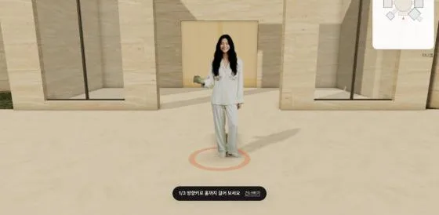
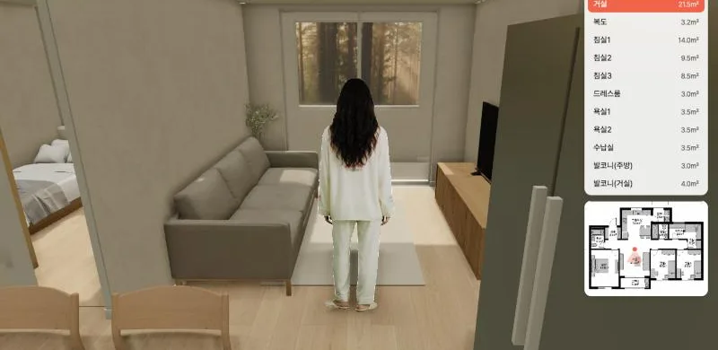
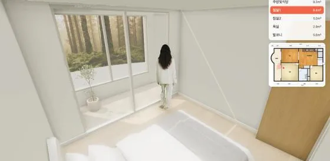

Higgsfield × three.js 3D 체험
실사 인물(Hana)·재질·가구를 Higgsfield로 만들고, three.js로 브라우저에서 바로 걸어 다니게 만든 예시입니다.

마인드 팰리스문서 목차를 건물로 — 방은 분야, 서가는 목차, 책은 문서들어가기 →

아파트 투어 184㎡ 3룸 · 평면도 한 장으로 만든 집 안 투어들어가기 →

아파트 투어 22룸 · 평면도와 3D 목업을 함께 읽어 만든 투어들어가기 →
마인드 팰리스의 책은 모두 시연용 가상 자료입니다. 크롬·엣지 데스크톱에서 가장 잘 보입니다.